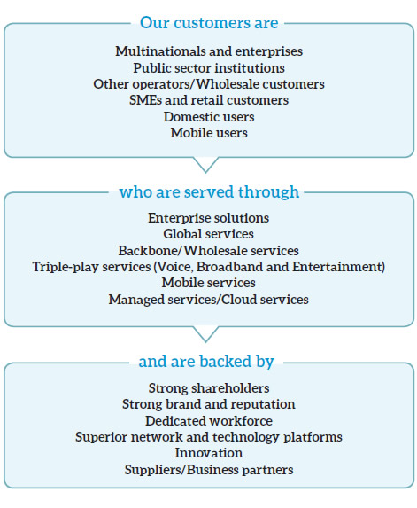
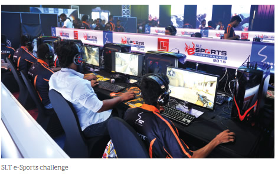
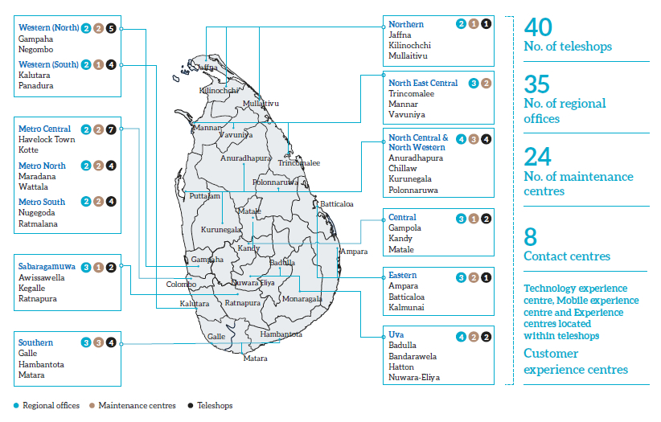
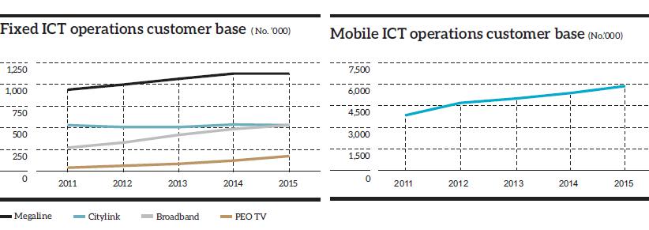
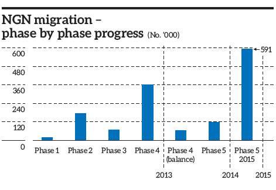
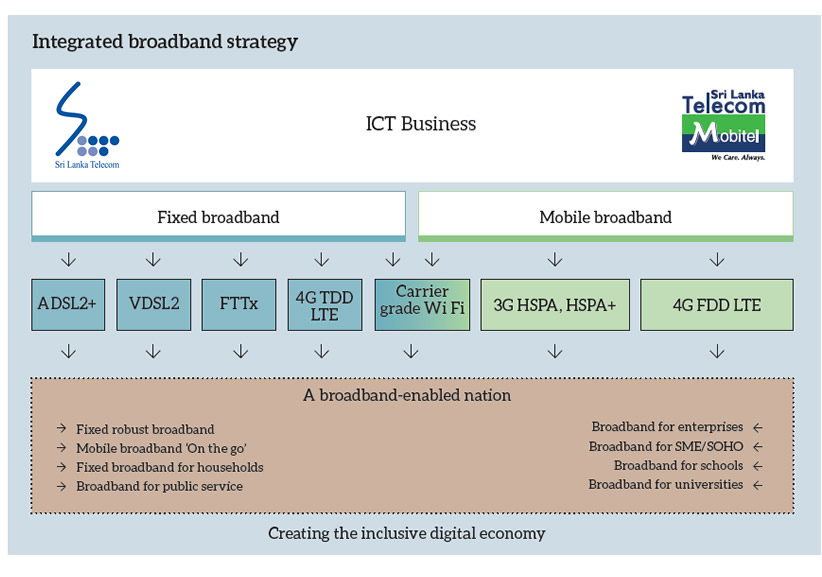
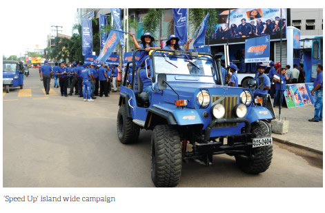

Customer Capital
We place our customers at the centre of everything we do. They provide the reason for our existence. In our fast-changing, technology-driven industry we anticipate emerging trends and customer needs, and deliver innovative ICT products and services with passion, care and commitment.
Delivering Value to Our Customers
Fixed ICT Products and Services
Our primary products and services under fixed ICT business are:
- Voice – fixed (PSTN) and fixed wireless (CDMA and LTE)
- Internet – fixed (ADSL2+, VDSL2, FTTH and dial up) and fixed wireless (LTE)
- Enterprise data
- Wholesale
- Managed services including cloud services
- International
- Entertainment – IPTV services
- Networking solutions and structured cabling
Key ICT initiatives during the year
Broadband speed enhancement
The maximum speeds of nine broadband packages were doubled to 16 Mbps with effect from January 2015, thus enhancing our position as a provider of consistent, uninterrupted, high-speed service.
Broadband volume enhancement
Catering to ever increasing customer demand, effective from March 2015 SLT Broadband became the Internet provider with the highest volume and fastest Internet while providing the best value for money.
Launch of fibre optic broadband
The ‘Smartline’, a premium fibre optic broadband service, offers up to 100 Mbps download speeds and up to 50 Mbps upload speeds. This new product targets existing and new customers who require ultra-high speeds and heavy download volumes.
Enhancement to Abhimaana broadband package
To strengthen SLT Broadband service among state sector employees the volume of the Abhimaana package was enhanced by 40% to 3.5 Gb per month. This serves to penetrate broadband into a largely untapped market.
PEO TV
New channel genres in areas such as religious, kids educational and movies were introduced to offer a greater variety of content. Many discounted offers were introduced to existing voice and double play customers to minimise their entry costs to subscribe for PEO TV. We ran a ‘speed up’ campaign and introduced new product bundling. À la carte ordering and a video on demand (VOD) feature were activated for greater customer choice.
Web hosting packages
Shared web hosting charges were made more attractive for customers with packages targeting consumer, SME and enterprise segments. Further, customers are offered with free and optional value added services such as email accounts, domain name server (DNS), database hosting, web builder services and image galleries.
IDD package
We introduced the ‘per minute’ package for international direct dialling (IDD) to make SLT IDD more affordable for customers, with offers up to 17% rate reduction for the most popular countries, while a bill back message and SMS campaign was carried out to promote the budget IDD card to CDMA customers.
Air ticketing offers
Special air ticketing offers were made available for Megaline and Citylink telephone users.
Wi–Fi hotspots
Supporting the national objective to expand Wi-Fi access in the country we set up public Wi-FI hotspots in several popular locations where SLT customers may connect by using their home broadband username and password while non-SLT customers may access with a Wi-Fi prepaid card.
SLT Citylink CDMA reloading facility through mCash
Citylink prepaid phones were given the facility to reload through mCash retail points with effect from August 2015, thus increasing customer convenience.
Digisolutions
SLT offers ‘digisolutions’ which enables the customer to monitor and automate their home from anywhere, anytime using a smartphone or tablet. The first demonstration centre for ‘digisolutions’ was established at the SLT Havelock Town regional office.
SLT Intelligent Solutions
The SLT Intelligent Solutions encompass the entire gamut of next generation voice, networking, data hosting and managed services to facilitate local businesses to compete in the global arena. Globally, the convergence of voice, data and video networks is having a profound impact on the way businesses are run and SLT is proud to be at the forefront of this revolution in Sri Lanka.
Akaza cloud service
On demand access to a multiple array of IT-related services has become an imperative of corporate enterprises. It is in this backdrop that Akaza, the national cloud platform of SLT, was established in 2015. Local corporates are now able to utilise shared configurable computing resources via locally hosted Internet servers, and pay in line with usage. This groundbreaking venture has addressed the essential requirement of securing confidential data which is where the bottleneck has been in the past.
BIZ Voice
These are customised and tailor-made solutions to ‘voice’ communications requirements and are for companies, enterprises and Government institutions.
Data centre
SLT’s state-of-the-art data centre offers infrastructure and applications which help client companies to enjoy reliability, security and scalability, backed by professional support for their data storage requirements.
SME solutions
We provide a complete range of ICT solutions to empower our SME customers. SLT’s SME solutions include voice, networking, data hosting and managed services which are specially designed taking into consideration the unique requirements of this sector.
Mobile ICT Products and Services
Our primary products and services under mobile ICT business are:
- Mobile voice
- Mobile Internet
- Digital services
Key mobile ICT initiatives during the year
Voice
During the year, many initiatives were undertaken to drive post-paid and pre-paid usage. This included the Cash Bonanza Draw for year 2015 offering Rs. 230 million as prizes for both pre-paid and post-paid customers as a usage inducement strategy. Various other incentives such as seasonal promotions, segmented promotions, bonuses and bundled offers were extended to other voice services such as roaming and IDD.
Mobile broadband
Several initiatives were embraced to increase broadband penetration by providing best user experience and device affordability to facilitate adoption.
Digital services
mCash
Mobitel mCash enables customers the unique opportunity to withdraw cash from Commercial Bank Cardless ATMs in a quick and effortless manner. Also Mobitel’s mCash launched an innovative Mobile Wallet App for both Apple iOS and Android smartphone users, who now can use the app as an all-in-one solution to suit their daily needs such as transferring money, settling utility bills, paying insurance premiums, top up airtime and settling mobile bills, as well as purchasing goods and services through the app.
mTicketing
Following recommencement of the Colombo -Jaffna railway service, Mobitel unveiled its mTicketing counter at the Jaffna railway station to provide commuters a hassle-free reservation and ticket collection experience, which also enhanced the brand image of Mobitel in the region.
The mTicketing service, an initiative that Mobitel launched in 2009 for railway ticket reservations, will now be made available to other operators including Dialog, Etisalat, Airtel, Hutch and SLT as well through our partnership with Sri Lanka Railways.
Business solutions
In 2015 we introduced a suite of mobile business solutions to uplift the efficiency of the business community of Sri Lanka. Some examples:
Under our mAutomotive initiative we launched the ultrasonic fuel sensor, a state-of-the-art technology that is expected to revolutionise the monitoring mechanism for fuel consumption of vehicles in the most reliable and efficient manner for the first time in Sri Lanka.
In partnership with a leading tea broker we launched the mAuction app, which is a comprehensive data management system for the Colombo Tea Auction that connects tea brokers and buyers on a single platform through a live feed.
mLearning
Our mLearning platform for distance education has become well accepted, with the University of Colombo having used it for the last seven years. This is now also used to conduct public administration courses for government officers while several other educational institutions also conduct programmes through this platform. The Faculty of Graduate Studies of the University of Colombo won a prestigious award for distance learning based on this Mobitel mLearning platform.
Other initiatives
We supported innovation in many ways. The opening of the Mobitel Innovation Centre at TRACE Expert City Colombo supports an ecosystem driven by science, technology and innovation. Mobitel also hosted the Google I/O Extended Sri Lanka conference for the third consecutive year in May 2015, which is a developer focused event for Google enthusiasts.
Market Reach
The SLT teleshops and regional telecom offices located at central places help customers to obtain all our services conveniently. Our island-wide dealer and reseller network helps further to reach customers with pay phone cards and facilities to register for broadband and LTE. Customers may pay their bills at all popular banks, supermarkets and sales outlets of selected top companies that have a countrywide presence.
Joint marketing by SLT and Mobitel
A new approach was adopted in 2015 whereby all ICT products and services are now marketed under one roof. SLT customer touch points such as teleshops provide Mobitel services to customers in selected areas, and this will be expanded further.
SLT and Mobitel teams are working together to develop our overall ICT business by cross selling products and total fixed-mobile solutions to enterprises, Government sector institutions and individuals.
Key Trends
Customer Care
Information on products and services
Customer engagement to provide accurate and up-to-date information on products and services and to obtain feedback is done mainly through one-on-one interactions, the contact centre, through our website and social media, mailers, newsletters, brochures, customer satisfaction survey, ICT workshops for SME business owners and IT managers, enterprise customer forums and customer visits and meetings. Mass media such as advertising is used mainly to communicate information on products and services to the general public.
Our website, facebook page, front office staff, field staff, telemarketing and other marketing communication activities provide information to customers.
Enterprise customers are frequently visited by the account managers assigned to each customer. Enterprise customers contact the account manager for any support they need. The contact details of senior staff have been provided to enterprise customers to escalate any issues if they do not receive the expected service.
Contact centre
The SLT contact centre is a gateway provided to customers to obtain information, technical assistance and to log complaints. Customers may connect through voice calls by dialling the well-publicised toll free hotline number 1212, or through email, web-chat, fax and SMS. The service is operational round the clock on all seven days of the week.
As an information provider, the contact centre also performs a marketing function and has succeeded in attracting new business as well as the sale of upgrades and product enhancements to existing customers.
Likewise, Mobitel operates a 24x7 call centre which is accessible by dialling the hotline 1717 to cater to the needs of mobile subscribers.
Complaint management
Customer complaints received by the contact centre and enterprise help desk are logged in the operational support system (OSS) and forwarded to relevant work groups. Until trouble tickets are attended and closed they remain open in the system. Officers in charge of these work groups monitor the system. The OSS history of activities is analysed for decision-making on further improvements. Samples of closed trouble tickets are picked to obtain feedback from customers who lodged complaints, and further action is taken as appropriate.
The total call volume during 2015 was 10.88 million, which works out to an average of over 29,800 calls per day including weekends and holidays. We maintained a customer satisfaction rate of 93% for the year.
Quality assurance
SLT is continuing with the ISO 9001:2008 quality management system and certification obtained in 2013 for its third successive year. We regularly conduct internal audits to assess whether we keep to our promises and internal benchmarks, and work on corrective measures as required.
SLT was the only organisation to win the World Class Award under the ‘large service’ category at the Global Performance Excellence Awards 2015 (GPEA). This is the highest recognition under the GPEA which attracted 24 competing organisations from nine Asian and Pacific Rim countries last year.
Service assurance
| Service | Service fulfilment index | Uninterrupted service index | Service restoration index | |||
| 2015 % | 2014 % | 2015 % | 2014 % | 2015 % | 2014 % | |
| Megaline | 66 | 71 | 88 | 89 | 65 | 68 |
| Citylink | 84 | 90 | 97 | 97 | 71 | 78 |
| Broadband | 57 | 59 | 86 | 87 | 58 | 67 |
The service fulfilment index indicates delivery within a promised time (No. of days) for new customers. The uninterrupted service index denotes the services provided to existing customers without a single breakdown or fault. Service restoration index indicates the fault clearance within a promised/standard time period.
We initiated several measures to improve service quality. They include –
- 70% of the core network elements powered by dual power sources
- Strengthened standby power supply by adding fixed and mobile generators and batteries
- Installed auto-reclosers to multi service access nodes (MSAN) to minimise service outages
- Introduced lithium iron phosphate (LFP) batteries which can withstand high temperature and have longer life to reduce service outages due to weak batteries during commercial power failures
- Improved the ring earth system of identified locations for better lightning protection
- Strengthened staff capability in power and AC installations and operation and maintenance by providing related training, tools and test equipment.
Customer satisfaction
Developing a customer satisfaction index (CSI) as measuring performance was an important strategic theme for 2015. Several internal programmes were launched across SLT during the year that included –
- Defining and communicating a customer-oriented vision
- Instilling a customer-oriented culture that embeds customer satisfaction throughout organisational practices
- Focusing on the total customer experience
- Establishing customer service standards and accountability.
- Carrying out customer satisfactions surveys covering three main segments, namely, enterprise, SME and consumer, with the support of an external research institute
Opportunities and Challenges
Retail
In the retail space, particularly among youth, we see over the top (OTT) operators like Netflix posing a threat. We need to align our portfolio to cater to that market and bring in multimedia, messaging and unified communication to add a lot of value to their screen.
Nevertheless, we too have our own place in this market as customers need more bandwidth. We have the capacity to provide the high data rates coupled with superior connectivity and experience to these consumers to take up these OTT services. Total data traffic is expected to grow significantly, largely driven by video and social networking, while we see a progressive reduction in cost per Mb with evolving technology.
Enterprise customers
The banking and finance sector holds much opportunity, particularly in non-voice services such as connectivity for networking with branches. We will further add value in data hosting and cloud services and are exploring solutions like enterprise resource planning (ERP), customer relationship management (CRM) and eLearning applications.
The solution space is open for us. Surveillance solutions, street cameras handled by the police, video conferencing solutions, eLearning and distance learning solutions and customer internal networks are some examples, all of which have a fixed and mobile element.
In the hospitality and leisure sector and the megapolis project we see opportunities such as in mixed development projects and smart cities.
We have been very strong in connectivity, while we see the sunset for voice. Enterprises now migrate their voice into data by setting up a network to converge both voice and data. When they want to contact a customer in the telecos network they are free to go out of the network. However, branch to branch and branch to HQ stays within the corporate voice and data integrated network. There is a cannibalisation internally, but we do provide that in view of retaining and growing this customer segment in the long run.
This is being challenged by other operators as they are equally good in providing connectivity with the emergence of the LTE Acer technology. This is the broadband network capable of delivering high quality of services. Other operators with this new technology are capable of providing robust solutions to enterprise and Government customers in the space of connectivity.
Our main strategy is to further add value by providing cloud-based services, business applications and industry specific solutions. A key strategy is to expand our optical fibre network so that customers’ branch offices are also connected through fibre. We need to build the infrastructure, strengthen the connectivity and add further value in the context of cloud, data hosting, applications and industry vertical solutions.
Small and Medium Enterprises
SMEs are an important future growth area, particularly in the use of IT for their small businesses. We have a system to visit the SME customer and to educate and show them the value additions they reap from IT applications. Some of the solutions are tailor-made. We saw an increased interest created in this during the year, including the Small Office Home Office (SOHO) solutions we offer.
Public sector institutions
The low level of IT automation in the Government sector presents opportunities for us. The Lanka Government Network which was established by SLT and some of the applications introduced by ICTA in collaboration with the respective Government departments and ministries were important milestones in promoting IT adoption. Yet more needs to be done. An area we are exploring is to set up the Government cloud and the data centre.
Wholesale
The wholesale business encompasses the whole gamut of domestic licence service providers, and mainly focuses on fulfilling their needs to deliver final products and solutions to their customers by way of providing infrastructure and transport layer solutions.
International
International has two components – voice and data. Voice is the bigger portion. As in the rest of the world while we face the challenge of retaining the traditional legacy voice we are also aggressively trying to grow the non-voice area. We are into new services such as managed services, cloud, business and industry specific applications etc.
We hope to expand our global business and establish PoPs (point of presence) and take them to some of the regional locations. Our business is very much confined to Sri Lanka at present, but we are looking at Singapore, North America, Europe and Middle East to set up businesses. We are investing heavily on the submarine cables with the SEA-ME-WE-5 which will provide us considerable capacity by mid-2016.
Investing for the Future
We are making several long-term investments on development projects that will fuel the future growth of the SLT Group and the country.
Global connectivity
SLT is aggressively pursuing new markets in the region. Building international connectivity is an important aspect of this strategy. SLT’s global coverage includes multiple undersea optical fibre cable systems: SEA-ME-WE 3, SEA-ME-WE 4, Bharat-Lanka (between India and Sri Lanka) and Dhiraagu-SLT (between Maldives and Sri Lanka). The SEA-ME-WE 4 cable system was upgraded with 100 Gbps technology in 2014.
Empowering leading banks with a total communications solution
SLT entered into an agreement to provide total communications solutions to a leading state bank and its branch offices located countrywide. This will provide the bank and its network of some 740 branches with access to SLT’s voice services and ultra high speed fibre optic broadband Internet facilities. Benefits include cost savings on inter-branch communications and improved productivity. SLT’s customised solutions have been acquired by about 90% of leading finance and banking sector institutions in the country, including state banks, private sector banks and rural development banks in a competitive ICT business environment.
The country’s geographical location makes it a natural nexus for communications in the Indian Ocean basin and helps Sri Lanka stay connected with unfolding new technologies across the region. Going forward SLT is in the process of implementing an unmatched global connectivity project, the SEA-ME-WE 5 international undersea cable system with a total design capacity of 24 Tbps and 100 Gbps technology. This 20,000 km cable runs from Singapore to France via Sri Lanka and is owned by a 20-member international consortium including SLT. The project commenced in September 2014 and is due for completion in 2016.
With SLT’s Rs. 5.2 billion investment in the new SEA-ME-WE 5 cable, the country’s global connectivity capacity will move to the next level - with Terabits of capacity; making Sri Lanka and SLT future-ready to take on the envisaged ‘data explosion’. The envisaged full landing status granted to Sri Lanka by the SEA-ME-WE 5 consortium will pave the way to establish a global point of presence (POP) in Sri Lanka in the future. Furthermore, the SEA-ME-WE 5 cable station that is being established in Matara facilitates double landing; thereby enhancing the reliability of Sri Lanka’s connectivity to the system. With these global connectivity advancements, Sri Lanka has opportunities to be the most preferred destination in the region for BPO or data centre operations.
PoP at Singapore
As the incumbent Internet service provider (ISP) of Sri Lanka, SLT maintains connectivity with all Internet hot spots such as New York, Paris, Frankfurt, Amsterdam, Italy, Mumbai, Chennai, Singapore and Hong Kong. These are single cable connectivities to international ISPs and during an outage the particular connection may be out of reach until the cable is restored. This is the typical network footprint of any small scale ISP in the Internet industry. The bigger ISPs have their own PoPs with multiple cable/equipment availability around the globe and hence can deliver undisturbed services due to the diversity.
To overcome the inherent weakness in our own system noted above SLT recently set up a PoP in Singapore. PoP is an extension of SLTNet, and we are confident in providing undisturbed Internet services through Singapore when there are cable outages. Similarly, there are plans to establish PoPs in Europe and USA.
National backbone network services
As the national backbone network (NBN) services provider, SLT has deployed a countrywide, secure optical fibre network to fulfil domestic transport requirements of service providers. At present, our NBN covers all 168 electorates around the country, and we are working towards making NBN connectivity available to all divisional secretariats. Eliminating historic legacy platforms, the new NBN will reduce maintenance costs, improve efficiencies, deliver faster service and increase speed and performance; all leading to service excellence for domestic operators.
SLT’s 100 Gbps national backbone network

SLT as the NBN operator designs, builds and operates the network, while offering wholesale services to domestic operators on an open access basis, thus empowering domestic operators to offer retail services to consumers.
i-Sri Lanka project
- The i-Sri Lanka project will be completed in 2016 resulting in –
- At least 90% of SLT broadband customers having up to 20 Mbps download speeds
- Customers having access to
– Fibre to the home (FTTH)
– Fibre to the business (FTTB)
– 4G/LTE
Network modernisation through NGN
SLT is working on transforming the entire national communications network into a next generation network (NGN). Such an NGN would be capable of handling massive amounts of data at super-fast speeds while ensuring maximum data integrity which enables voice, data and IPTV services. This ongoing project started in 2011.

i-Sri Lanka uses fibre optic FTTC, FTTB and FTTH technologies to extend connectivity via multi-service access nodes (MSANs) located in close proximity to the customer location.
About 25% of the country is covered by legacy SLT copper fixed lines. The balance 75% yet to be covered is open to SLT and all other operators to provide broadband services. SLT is working on providing FTTH and fixed LTE to this market segment. Our target for 2016 is to provide Smartline (FTTH), Megaline (ADSL/VDSL) and 4G/LTE connections as per market demand, with the longer-term target of connecting the entire country with an optical fibre backbone that will ensure high speed access to all.

SLT was the only organisation to win the World Class Award under the ‘large service’ category at the Global Performance Excellence Awards 2015 (GPEA)
Our customer care centre maintained a customer satisfaction rate of 93% for the year
‘Smartline’ premium fibre optic broadband service offers up to 100 Mbps download speed and up to 50 Mbps upload speed
The Mobitel Innovation Centre was opened in 2015
We had 25,000 km of optical fibre by the end of 2015. It has adequate bandwidth for SLT customers and other national requirements including all other telecom operators who use the backbone.
In addition we have initiated a national data centre project. This will cater to all national data requirements in terms of storage, servers, software and backup in a cloud environment.
With the completion of the NGN 2016, in which SLT has invested Rs. 13.8 billion from year 2008, we will completely migrate from our legacy voice based network. We are now working on the convergence of fixed and mobile networks so that customers may enjoy a full range of services, namely, fixed, mobile and broadband services with one single bill by implementing an IP multimedia subsystem (IMS) according to the 3rd Generation Partnership Project (3GPP) architecture. This will also result in better energy efficiency reliability.
While FTTN, FTTC and FTTB solutions are available with the migration to NGN, fibre to the home (FTTH) will be enabled at 100 Mbps download speed, thus increasing the reliability and quality of broadband data, voice and IPTV services.
Carrier grade Wi-Fi project
SLT launched the first ever carrier grade Wi-Fi in Sri Lanka in 2014 with the capability of mobile data offloading, enterprise and prepaid and postpaid broadband. Going further, together with ICTA and TRCSL, we launched free Wi-Fi services in public locations such as universities, hospitals and railway stations at the beginning of the year 2015. This supports the Government’s goal of providing free Wi-Fi to every citizen.
CEA network expansion
Expanded the communications enabled applications (CEA) coverage based on the SLT’s transport network architecture, access side capacity and foot print. Further supported the wholesale business by providing customer premises equipment.
Several other enhancement and expansion projects were undertaken, such as the IPMPLS network expansion, ISP network expansion and enhancement, ISP upgrade and IDC network enhancement.
‘SLT Speed Up’ campaign
The Speed Up campaign was an important event of 2015. The objectives were to create awareness among the public on the availability of Internet broadband options and solutions, as well as to enhance public awareness about the product portfolio of SLT.
By expanding broadband access and customer relevant technologies such as optical fibre to the home, 4G LTE and ADSL, we plan to make broadband services more affordable and connect more homes and businesses.
Broadband is a transformational technology. The SLT Group, driven by SLT and Mobitel, is driving an integrated fixed and mobile broadband strategy to create a broadband-enabled nation and an inclusive digital economy.
Empowering leading banks with a totalcommunications solution
SLT entered into an agreement to provide total communications solutions to a leading state bank and its branch offices located countrywide. This will provide the bank and its network of some 740 branches with access to SLT’s voice services and ultra high speed fibre optic broadband Internet facilities. Benefits include cost savings on inter-branch communications and improved productivity.
SLT’s customised solutions have been acquired by about 90% of leading finance and banking sector institutions in the country, including state banks, private sector banks and rural development banks in a competitive ICT business environment.
Easy payments through Mobitel mCash
Partnering with a reputed life insurance company Mobitel developed an mCash platform for the company’s life insurance advisors for life insurance policyholders. With the launch of this new facility, the insurer is able to update customers’ life insurance policies immediately while customers receive a SMS confirmation of their payment in real time.
Mobitel has made a strong presence countrywide with mCash which enables its customers to maintain a mobile money account for a quick and convenient method of carrying out financial transactions. Licensed under the Central Bank of Sri Lanka, mCash provides a full range of services that include deposits, withdrawals and money transfer facilities.